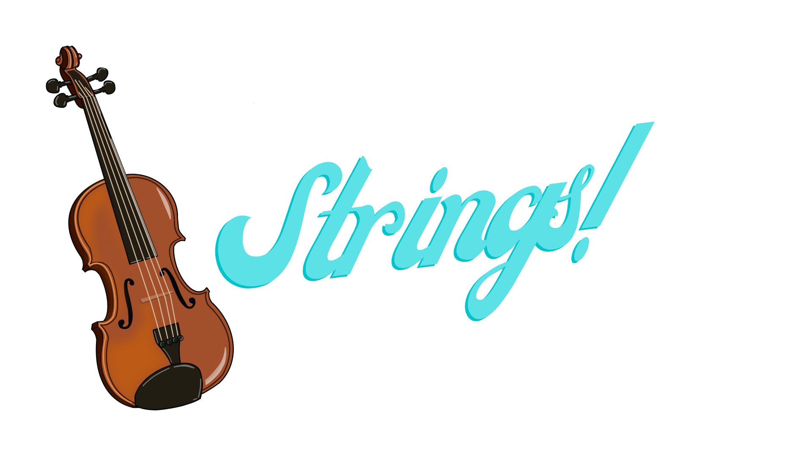
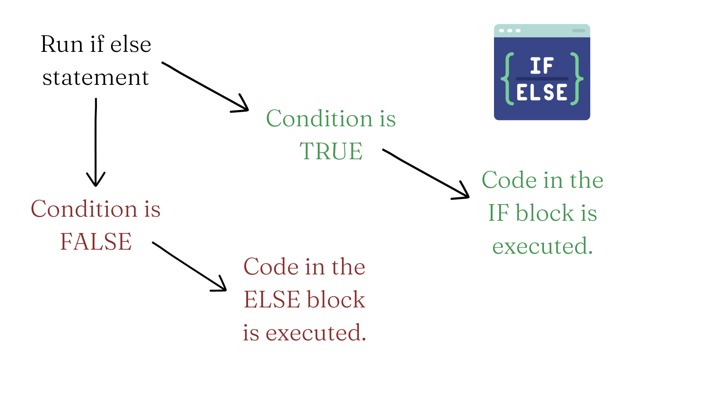

a <- "Invoking the Bard, she replied 'To thine own self be true.'"
a[1] "Invoking the Bard, she replied 'To thine own self be true.'"
As we discussed in Chapter 4, character values are stored in objects known as strings in R. Let’s go over a few key things with strings.
First, let’s remember that string values are surrounded by quotes, such as x <- "Hello, World". These can also be single quotes, such as y <- 'Hello, World'. However, you CANNOT combine double quotes on one end of the value and single quotes on the other, such as z <- 'Hello, World". So, make sure you are consistent. I recommend using double quotes consistently, as R will always print and store the value with double quotes, even if you store the variable using single quotes.
What if you want to store quote within a quote? In this case, you can use the standard grammar rules of American English. According to Brittney Ross from grammarly, in American English, we use double quotation marks for quotes, and single quotation marks for quotes within quotes. Here’s an example.
a <- "Invoking the Bard, she replied 'To thine own self be true.'"
a[1] "Invoking the Bard, she replied 'To thine own self be true.'"Notice that simply running the object name returns its value, in the same way that print()does. We can check the length of a string with the nchar() function.
nchar(a)[1] 59We can also check if a character or sequence of characters exist in a given string using the grepl() function, in which the first argument is the character/sequence of interest, and the second argument is the string. Evaluating this expression returns a logical value.
grepl("Bard", a)[1] TRUEgrepl("Z", a)[1] FALSETo combine strings, we can use the paste() function, where the arguments are the string objects to be combined. This is also called concatenating or merging multiple strings.
# Let's create two new string objects b and c.
b <- "Demurely and without hesitation, I invoked Jonson 'There is no greater hell than to be a prisoner of fear.'"
c <- "That ended the conversation rather quickly."
# Now we combine the three
d <- paste(a,b,c)
d[1] "Invoking the Bard, she replied 'To thine own self be true.' Demurely and without hesitation, I invoked Jonson 'There is no greater hell than to be a prisoner of fear.' That ended the conversation rather quickly."Note that the paste() function concatenates strings with a space by default. If we don’t want spaces by default, we can use the paste0() function which does not separate strings by spaces, by default.
paste0("Remove", "All", "Spaces", "Now", "!", "!", "!")[1] "RemoveAllSpacesNow!!!"The stringr package also has a number of useful functions for manipulating strings. One thing I find especially helpful in this package is the ability to convert the characters in a string to lowercase, uppercase, or title case. This is especially helpful if you have values with inconsistent punctuation. Here’s an example.
# A string with inconsistent punctuation
library(stringr)Warning: package 'stringr' was built under R version 4.2.2e <- "WOW, tHiS Is qUiTE a mESsY oNe."
# Let's str_to_lower() function to make all characters lowercase.
f <- str_to_lower(e)
f[1] "wow, this is quite a messy one."# Now we use the str_to_upper() function to make all characters uppercase.
g <- str_to_upper(f)
g[1] "WOW, THIS IS QUITE A MESSY ONE."# Finally, we use the str_to_title() function to make all characters title case.
h <- str_to_title(g)
h[1] "Wow, This Is Quite A Messy One."Sometimes you have a string or vector of strings for which you want to apply a broad-sweeping change. This commonly happens with variable names or values, and sometimes, you want to write code to make changes to a number of values without changing the values one-by-one. In this case, the sub() and gsub() functions are very useful. These functions take the first argument as the pattern to match, the second as the thing you want to replace the pattern with, and the third is the dataframe or vector you are modifying. The main difference between sub() and gsub() is that sub() only modifies the first match in an individual string or vector, whereas gsub() modifies all matches in a particular string or vector. I tend to use gsub() more often than sub(), but use what works for you. Let’s see how it works.
# First let's create a vector of strings.
intro <- c("Hello, my name is Jamal.")
print(intro)[1] "Hello, my name is Jamal."# Let's say I want to substitute another name for Jamal here. The gsub() function helps me do that.
gsub('Jamal', "Monica", intro)[1] "Hello, my name is Monica."# If you want to add a prefix to a vector of strings based on a particular pattern, you can use the weird symbol combination .*^ (period asterisk caret) as the first argument.
gsub(".*^", "Welcome and ", intro)[1] "Welcome and Hello, my name is Jamal."# Finally, let's work with a dataframe.
df <- data.frame(id = 1:4,
gender = c("male", "female", "transgender", "non-binary"),
state = c("California", "Pennsylvania", "New York", "Georgia")
)
head(df) id gender state
1 1 male California
2 2 female Pennsylvania
3 3 transgender New York
4 4 non-binary Georgia# Let's change all the gender values to abbreviations.
df$gender <- gsub("female", "F", df$gender)
df$gender <- gsub("male", "M", df$gender)
df$gender <- gsub("transgender", "T", df$gender)
df$gender <- gsub("non-binary", "NB", df$gender)
head(df) id gender state
1 1 M California
2 2 F Pennsylvania
3 3 T New York
4 4 NB Georgia# Looks good. Now let's change all the state names to their abbreviations.
df$state <- gsub("California", "CA", df$state)
df$state <- gsub("Pennsylvania", "PA", df$state)
df$state <- gsub("New York", "NY", df$state)
df$state <- gsub("Georgia", "GA", df$state)
head(df) id gender state
1 1 M CA
2 2 F PA
3 3 T NY
4 4 NB GA# You can also substitute a blank space for any value with gsub()
df$state <- gsub("CA", " ", df$state)
df$state[1] " " "PA" "NY" "GA"When it comes to substituting strings, it’s better to test replacement code on a smaller set of values before expanding to all the values you want to modify. This will avoid errors.
Very often we are interested in comparing two quantities in R. For instance, we may compare a variable to a value, or two variables to one another. We can also use Boolean operators in constructing our comparisons. Boolean operators are words like AND, NOT, and OR that are used as conjunctions commonly to create advanced search terms. However, we can also use them in creating comparisons.
To start, let us remind ourselves of common operators used in comparisons, as well as the three common Boolean operators, seen in Table 5.1.
| Operator (R code) | Description |
|---|---|
| == | Equals to |
| != | Not equal to |
| < | Less than |
| > | Greater than |
| <= | Less than or equal to |
| >= | Greater than or equal to |
| ! | NOT |
| | | OR |
| & | AND |
You can use these to compare values or objects. Comparisons result in a logical value being returned.
# Comparing values
12 > 4[1] TRUE4.32 == (16.03/4)[1] FALSEpi^pi <= (4 * pi) / (pi + 4)[1] FALSE# Comparing objects
a <- 453
b <- 4 * 23
a >= b[1] TRUE## The objects being can be vectors of the same length. This will return a vector of logical values.
c <- mtcars$mpg > mtcars$wt
print(c) [1] TRUE TRUE TRUE TRUE TRUE TRUE TRUE TRUE TRUE TRUE TRUE TRUE TRUE TRUE TRUE
[16] TRUE TRUE TRUE TRUE TRUE TRUE TRUE TRUE TRUE TRUE TRUE TRUE TRUE TRUE TRUE
[31] TRUE TRUE# Booleans can be used to create multiple conditions for the comparison.
d <- 500
e <- 50
# This evaluates to FALSE becase d > 100.
d < 100 & e < 100[1] FALSE# This evaluates to TRUE because at least one of {d,e} < 100.
d < 100 | e < 100[1] TRUE# This evaluates to TRUE because d > e.
d != e[1] TRUEComparisons are commonly used within if and if else statements. These are conditional statements that specify a condition that must be satisfied, and then list rules for what happens if the condition is satisfied and what happens when it is not satisfied. The logic of the if else statement in show in Figure 5.1.

Let’s have a look at some simple If Else statements involving comparisons. Note that the If and Else blocks are surrounded by curly braces { }.
# First, we create some variables.
f <- 25
g <- 50
h <- 10
# Now let's try a simple If Else statement comparing the variables.
if (g < f) { # Here comes the If block
print("g is less than f")
} else { # Here comes the Else block
print("g is greater than f")
}[1] "g is greater than f"if (g < h) { # Here comes the If block
print("g is less than h")
} else { # Here comes the Else block
print("g is not less than h")
}[1] "g is not less than h"We can also add more conditions with the else if statement, which basically tells R “If the previous condition is not true, here’s another condition with a rule.” Let’s add an Else If statement to the example above.
# First, we create some variables.
f <- 25
g <- 50
i <- 50
# Now we add some Else If statements to our IF statement.
if (g < i) {
print("g is less than i")
} else if (g > i) {
print("g is greater than i")
} else if (g == i) {
print("g is equal to i")
}[1] "g is equal to i"# You might say that the third Else If condition above can just be an Else statement, since if g !< i & g !> i, it must be that g == i. This is true! Let's write it that way.
if (g < i) {
print("g is less than i")
} else if (g > i) {
print("g is greater than i")
} else {
print("g is equal to i")
}[1] "g is equal to i"We can also add the AND operator & and OR operator | to the conditional statements.
# Let's create some variables.
j <- 100
k <- 200
l <- 150
# Now we use & (AND) in our if else statement.
if (j < l & j < k) {
print("j is the lowest")
} else if (j > l & j > k) {
print("j is the highest")
} else {
print("j is the middle value")
}[1] "j is the lowest"# Now we use | (OR) in our if else statement.
if (l < k | l < j) {
print("l is less than at least one other value")
} else {
print("l is the highest")
}[1] "l is less than at least one other value"That about wraps it up for Strings and Comparisons. As always, don’t forget to…

As always, it’s a good idea to attempt these while the material is still fresh. You can find the answers in Appendix C.
Create a variable called MarySue1 with the value "Dr Mary Sue Coleman, former president of the University of Michigan once said". Then, create another variable called MarySue2 with the value "For today, goodbye. For tomorrow, good luck. And Forever, Go Blue!". Then find the number of characters in each variable using the nchar() function. Then, check if the letter ‘r’ is present in each variable, and report the results.
Create a variable called MarySue3 whose value is a concatenation (combination) of MarySue1 and MarySue2. Then, print the value for MarySue3.
Create a string vector called basho and assign it the value "An old silent pond. A frog jumps into the pond—Splash! Silence again." Then create and print another variable called basho2 in which the word ‘frog’ has been replaced by ‘buffalo’, and the word ‘Splash!’ has been replaced by ‘Yikes!’.
Let’s do a variation of Mad Libs I will call Mad Sentences. Install and load the keyToEnglish package (be mindful of the capitalization in this package’s name). Then create three variables named after your three favorite cuisines. For each variable, assign the value generate_random_sentences(n = 2, punctuate = TRUE) to generate two random sentences per variable. This will produce a total of six sentences (two per variable). Finally, create a variable called madsentences whose value combines (pastes) all three variables. Print madsentences. If it sounds nonsensical, then it worked!
Let’s compare the returns from simple vs compound interest after five years. First, define p as 1000, r as .07 and t as 5. Then Create a variable called simple with the value p * r * t. Next, create a variable compound with the value p * (1 + r)^t - p. Then, perform a logical test to see if simple is equal to compound, and write out the results of the test in one sentence.
Retain the variables you created above and write a series of conditional (If else/Else If) statements according to the following rules: 1) If simple is less than compound, print the statement “Simple interest is less than compound interest”; 2) If simple is greater compound, print the statement “Simple interest is greater than compound interest”; 3) If simple is equal to compound, print the statement “Simple interest is equal to compound interest”.